Software
DwasoPOS
A retail point-of-sale system bringing checkout, stock management and receipt printing into one workflow, with offline support for shops with intermittent connectivity.
Software, websites & visual communication
A collection of software applications, e-commerce storefronts, digital marketing initiatives, and visual identities.
Software
A retail point-of-sale system bringing checkout, stock management and receipt printing into one workflow, with offline support for shops with intermittent connectivity.
Software
A BECE preparation platform for Ghanaian junior high schools, bringing question banks, learner dashboards, assessment tools and subscription payments into one place.
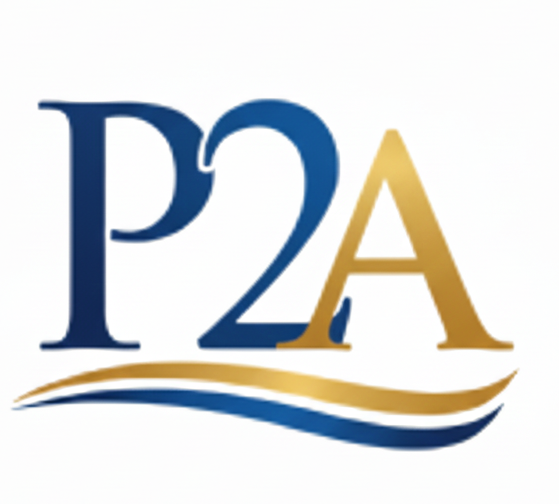
Websites
A full-stack e-commerce and services platform for an accounting and tax consultancy, helping customers explore products, understand services and make enquiries.
Websites
A Django product and quotation website, supported by SEO, GA4/GTM enquiry tracking and ongoing digital marketing and business development.
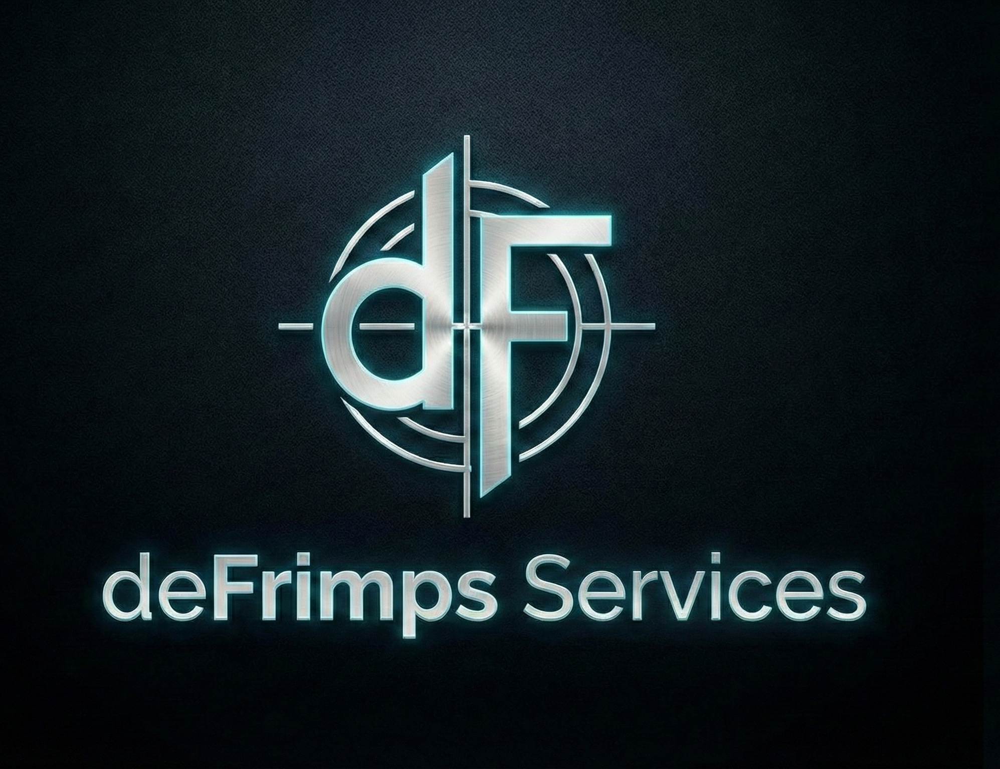
Websites
A responsive printing services website with product previews and ordering options, supported by content management and functional maintenance.
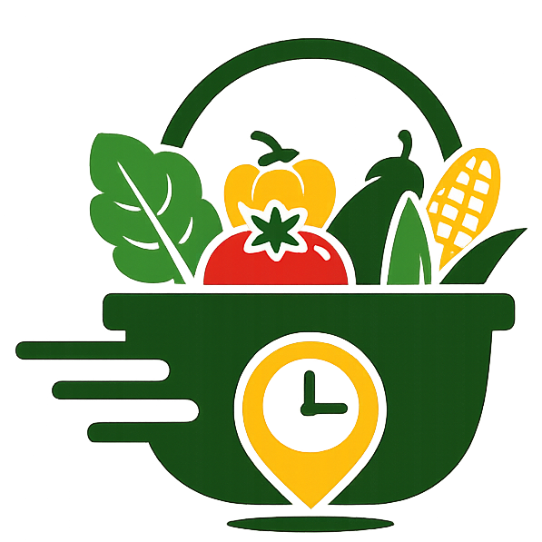
Software
A grocery and fresh produce marketplace project focused on ordering and delivery in Accra.
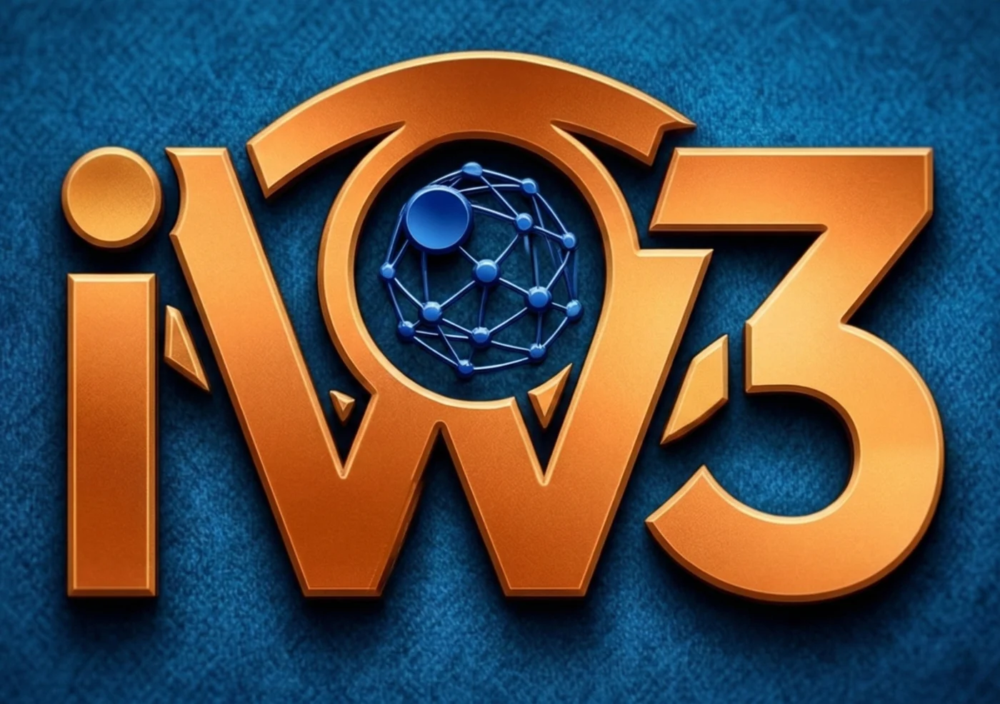
Websites
A digital agency website organising web design, social media, branding and analytics services so prospective clients can understand the offer and make enquiries.
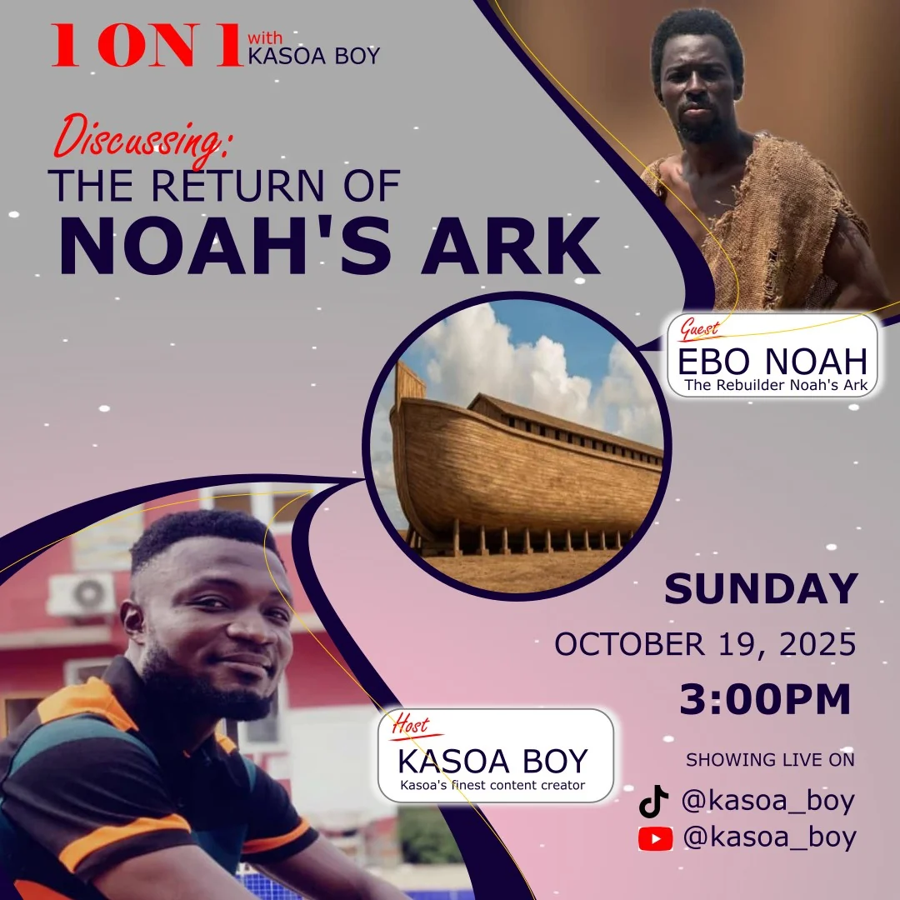
Media
Content strategy, video production, and digital brand management for the Kasoa_Boy creator channel.
Design
Promotional artwork for a fashion and beauty brand, designed for social media and print.
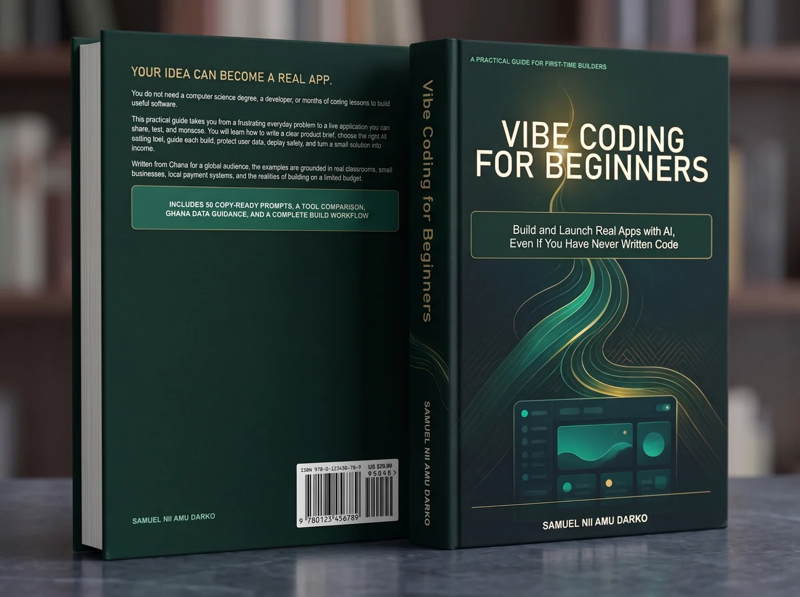
Design
An editorial cover for a practical book about building software, with a focus on clear typography and visual hierarchy.
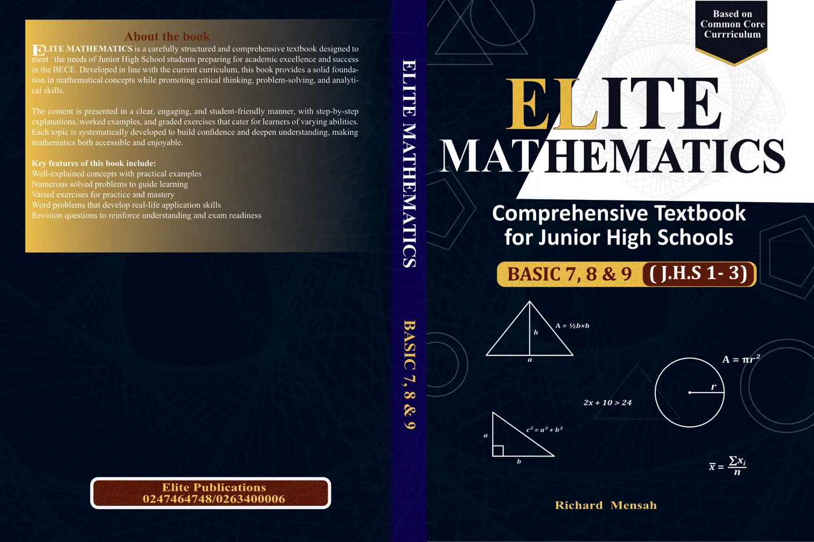
Design
A mathematics textbook cover designed to make a classroom publication clear, recognisable, and engaging.
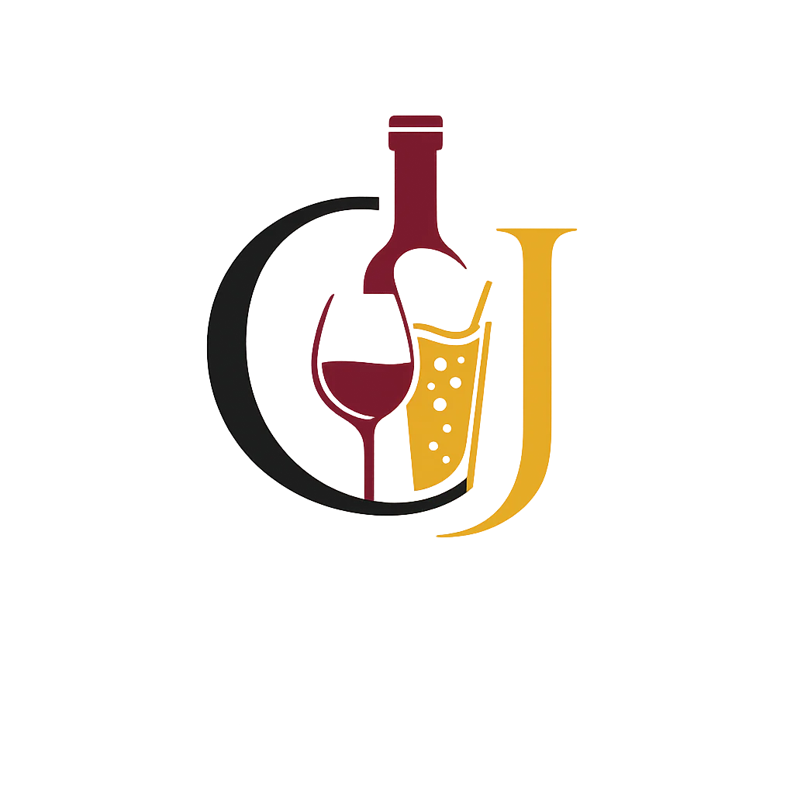
Design
A logo and visual identity exploring simple geometry and a distinctive brand mark.
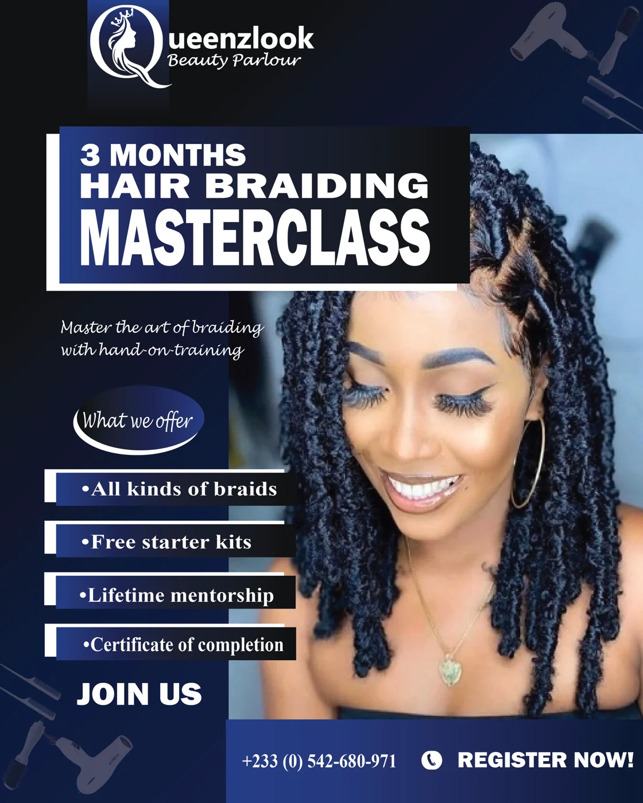
Design
Corporate promotional artwork developed for digital and print advertising.
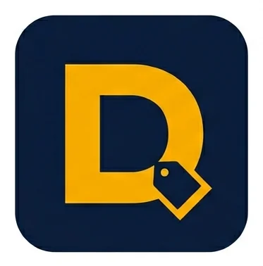
▶ Watch filmMedia
A video commercial introducing the sales, inventory, and receipt printing features of DwasoPOS.
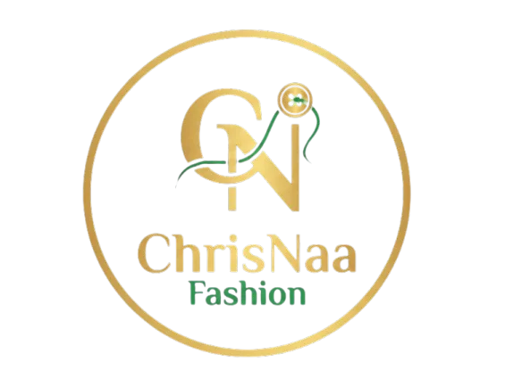
▶ Watch filmA fashion showcase video using product imagery and pacing for social promotion.
Design
A promotional graphic bringing bold typography and colour together for a brand campaign.